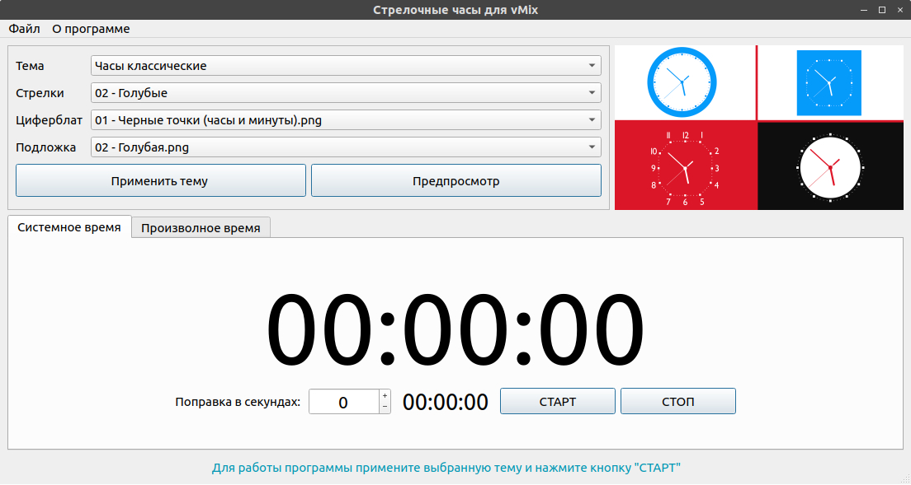
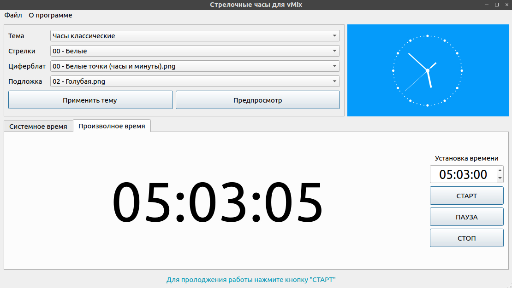

Данное приложение написано для использования с программой vMix и модуле «Title Designer». «Title Designer» прекрасно работает с модулем «DATA SOURCE» который передает «Title Designer» данные из импортированных файлов (txt, csv и др.). Что позволяет отображать стрелочные часы в программе vMix.
Приложение позволяет сохранить настройки, для быстрого использования в последующем (быстрая загрузка предыдущих настроек).
Это приложение позволяет создавать свои шаблоны (темы), вот их структура:
Папка «Theme» - хранятся темы (каждая тема разделена на 3 папки);
Папка «Bg» - хранит фоны;
Папка «Face» - хранит изображение циферблата;
Папка «Color» - хранит цветовые схемы стрелок (часы, минуты и секунды), в папке располагаются папки с именами схемы;
Внутри папки «Color» и папки с именем схемы находятся еще 3 папки с именами «hours»,«minutes» и «seconds», что соответствует часам, минутам и секундам. В каждой из папок 60 фойлов с именем «hour_0000.png», «minute_0000.png», «second_0000.png». Это секвенция от 0 до 59 файла («hour_0000.png» - «hour_0059.png» и тд.) . Имена файлов в этиих папках, в обязательном порядке должны быть именно такими. Имена в папках «Bg» и «Face» могут быть любыми.
Программа работает с типом файлов в формате "PNG". Другие форматы вызовут проблемы в работе и ошибки. Также лишних файлов в папках быть недолжно.
 Вы используете данный программный продукт на свой страх и риск.
По всем вопросам и предложениям пишите на почту ItPython@yandex.ru